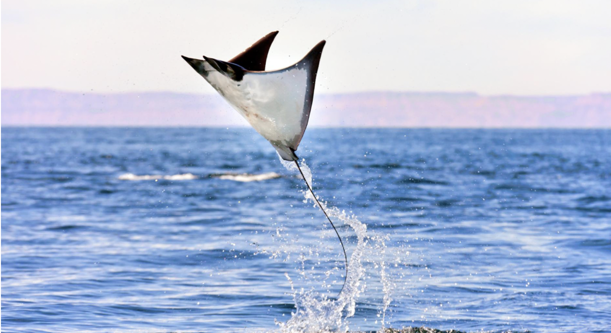

Agile Swimmers (fishes)
Name: Sword Fish
Scientific Name: The scientific name of swordfish is Xiphias gladius.
Depth: 550m-2878m
Description: Swordfish are ectothermic animals; however, along with some species of sharks, they have special organs next to their eyes to heat their eyes and brains. Temperatures of 10 to 15 °C (50 to 59 °F) above the surrounding water temperature have been measured. The heating of the eyes greatly improves their vision, and consequently improves their ability to catch prey. Of the 25, 000+ fish species, only 22 are known to have a mechanism to conserve heat. These include the swordfish, marlin, tuna, and some sharks. It is classified under the higher classification of Xiphias; Swordfish are well known as broadbills in some of the countries. These migrate from one place to another and are mostly found in tropical and temperate parts of Indian Oceans, Pacific Ocean and the Atlantic Ocean. They are found under the depth of 550m. They reach a length 9.8 ft and mass of 650-kilo grams. It is called as swordfish because it has a sword-like spear to kill prey and make it is easier to eat. These are vigorous fighters.
Lifespan: lives for about nine years.

Name: Ocean Sun Fish
Scientific Name: The scientific name of Ocean sunfish is Mola mola. It is classified under the classification of mola.
Depth: 90-170m
Description: It is the heaviest bony fish in the world. Sunfish diet consists of mainly Jellyfish; the reason is it is nutritionally poor. These will become food for predators like a sea lion, killer fishes etc. These are native to tropic waters and temperate to every ocean in the world. They swim up to 26 km per day.
Lifespan: usually live for about 10 years in captivity, while their lifespan in their natural habitat is not known.

Name: Clown Fish
Scientific Name: Amphiprioninae
Depth: 1-12m
Description: Orange with three distinctive white bars, clown anemonefish are among the most recognizable of all reef-dwellers. They reach about 4.3 inches in length, and are named for the multicolored sea anemone in which they make their homes. Surprisingly, all clownfish are born male. They have the ability to switch their sex, but will do so only to become the dominant female of a group. The change is irreversible.
Lifespan: In captivity, the clownfish can live from 3 to 5 years. In the wild, they live 6 to 10 years.

Name: Puffer Fish
Scientific Name: Tetraodontidae
Depth: 30m
Description: Biologists think pufferfish, also known as blowfish, developed their famous “inflatability” because their slow, somewhat clumsy swimming style makes them vulnerable to predators. In lieu of escape, pufferfish use their highly elastic stomachs and the ability to quickly ingest huge amounts of water (and even air when necessary) to turn themselves into a virtually inedible ball several times their normal size. Some species also have spines on their skin to make them even less palatable. A predator that manages to snag a puffer before it inflates won’t feel lucky for long. Almost all pufferfish contain tetrodotoxin, a substance that makes them foul tasting and often lethal to fish. To humans, tetrodotoxin is deadly, up to 1,200 times more poisonous than cyanide. There is enough toxin in one pufferfish to kill 30 adult humans, and there is no known antidote.
Lifespan: live up to ten years or more.

Name: Mobula
Scientific Name: -
Depth: 1,000–2,500m
Description: Mobula rays are as good at swimming as they are at jumping. As they travel, they move their fins up and down to steer through the water. Even baby mobula rays, born at 25 pounds with their fins curled, are gifted gliders. The babies, called pups, immediately unfold their fins and swim off. Launching itself six feet above the ocean’s surface, a fish called a mobula ray does a flip before plunging back into the water with a splash. The fish is traveling with about a hundred other rays that also jump, twirl, and belly flop as they move through the sea. These marine animals are expert acrobats. But their moves remain a mystery to scientists. Ray—Mobula rays live in warm oceans throughout the world. These fish have a pair of winglike fins that can extend up to 17 feet. The fins help the rays rocket from the sea when they leap. Scientists aren’t exactly sure why all nine species of mobula rays do these jumps. But they think it may be to show off for a potential mate, get rid of parasites, or communicate. Mobula rays tend to swim in schools of a hundred or more fish, especially while feeding. These marine animals snack on tiny fish and small sea creatures called zooplankton. They eat by scooping prey into their mouths with the floppy lobes that hang from either side of their heads. When the rays find an area rich with food, they make sure to share the grub with the group. These jumping fish make us want to leap for joy!
Lifespan: Generally, giant devil rays are long lived and slow growing and the maximum lifespan of this species is estimated as 20 years.
Name: Stoplight loosejaw
Scientific Name: -
Depth: 1700 to 13,000 feet (500-4000 m)
Description: Many deep-sea creatures give out blue light called bioluminescence - but the stoplight loosejaw emits red light as well. This light is invisible to both prey and predators, and probably acts like a torch for searching out shrimps and small fishes. It may also be used to communicate with other stoplight loosejaws.The fish's jaw and neck are hinged so its mouth can open mouth wide and impale prey on needle-sharp teeth. Adult stoplight loosejaws are less than one foot (30 cm) long and eat small fishes and crustaceans. The stoplight loosejaw uses its long, needle-like teeth and unique jaws to ensure that no passing meal is too big to miss. Unlike some closely related fishes that migrate toward the surface each night, scientists believe that the stoplight loosejaw stays in the deep. Like most species in the deep sea, the stoplight loosejaw is very difficult to study and is only known from specimens that are brought up from deep nets. Stoplight loosejaws are not eaten by people, and there is no evidence to suggest that people have any negative affects on their populations.
Lifespan:

Name: Wels catfish
Scientific Name: The scientific name of Wells catfish is Silurusglanis. It is classified under the classification of Silurus. It is also called as sheatfish.
Depth: 0-30m
Description: The wels catfish lives in large, warm lakes and deep, slow-flowing rivers. It prefers to remain in sheltered locations such as holes in the riverbed, sunken trees, etc. It consumes its food in the open water or in the deep, where it can be recognized by its large mouth. Wels catfish are kept in fish ponds as food fish. An unusual habitat for the species exists inside the Chernobyl exclusion zone, where a small population lives in abandoned cooling ponds and channels at a close distance to the decommissioned power plant. These catfish appear healthy, and are maintaining a position as top predators in the aquatic ecosystem of the immediate area. This fish is mostly found in Lake Constance. These also found in basins of Baltic, black and Caspian Sea. Size of this fish is about 13 ft that is of 4m. Maximum weight is about 400kg. These are mostly found in freshwater places. They feed on other animals which live in water bodies.
Lifespan: Lifespan of this fish is about 60 years.